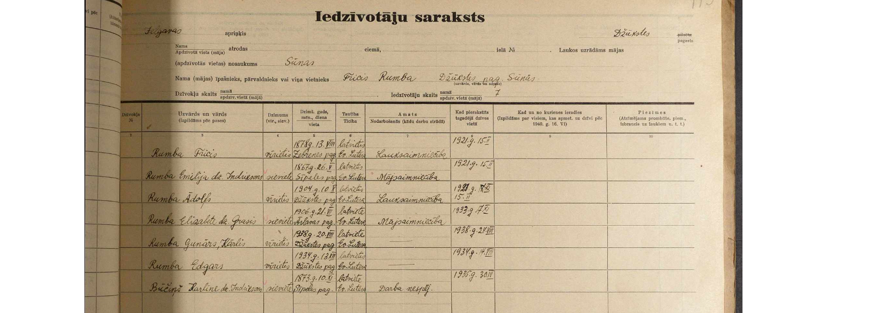

|
Tautskaišu apkopojumi |
|
1897. gadu tautskaites dokumenti ir digitalizēti LNA vietnē Raduraksti.lv, kur tie
pieejami, sakārtoti pa pagastiem un pilsētām. Pirmās vispārējās tautas skaitīšanas materiāli
līdz mūs-dienām saglabājušies tikai daļēji (254 arhīva lietas).
Visām tautskaitēm var piekļūt vietnē Ciltskoki.lv , kur bez samaksas iespējams izmantot meklēšanas rīku, atlasot interesējošo novadu un ievadot personvārdus. Maksas versijā iespējams pat neievadīt dokumenta veidu un pagastu, bet meklēt pilnībā visus dokumentus no kādas personas (tas noder arī pasu un baznīcu grāmatu pētniecībā, tā pat tur pieejamas izrakstīšanās, armijas lietas un mirušo hronikas). Tiesa, daži pagasti var būt nepilnīgi indeksēti, tādēļ vajadzības gadījumā būs jāveic pašrocīga tautskaites dokumentu revīzija vietnē Raduraksti.lv, kas arī ir izdarāms no mājām.
Vietnē Ciltskoki.lv pieejamas digitalizētas
pasu grāmatas. Iespējams izmantot meklēšanas rīku un, ievadot meklētās personas vārdu, atrast
dokumentu. Līdzīgā veidā var atrast arī no 1919. līdz 1940. gadam izdotās pases. Tas izdarāms
tikai pēc maksājuma (ziedojuma) veikšanas, kad, saņemot kodu, tiks iegūta piekļuve visām
starpkaru perioda LR pilsoņu pasēm un meklēšanas rīkam.
Tālāk izklāstīts par katru tautskiti, tās mērķiem, kā arī informācija par pasu grāmatām. |
|
|
1897. gada tautskaite |
|
Pirmoreiz visa pašreizējā Latvijas teritorija tika aptverta tikai 1897. gada Viskrievijas tautas
skaitīšanā, kad pirmo reizi tā notika arī Latgalē, kura tajā laikā ietilpa Vitebskas guberņā.
Tautas skaitīšana notika 1897. gada sākumā, lai iegūtu datus par stāvokli 28.01.1897.
Tautas skaitīšana galvenokārt attiecās uz cilvēkiem, kuri tajā brīdī atradās mājās, neatkarīgi no tā, vai viņi tur dzīvoja pastāvīgi un bija tur reģistrēti. Tika sagatavotas trīs dažādas tautas skaitīšanas veidlapas: A veidlapa zemnieku mājsaimniecībām lauku kopienās, B veidlapa namīpašnieku mājsaimniecībām, privātmājām un ciematu mājsaimniecībām un C veidlapa pilsētniekiem. Mājsaimniecība bija pamatvienība pētījumā. Pilsētās dzīvokli uzskatīja par mājsaimniecību, un katra mājsaimniecība saņēma atsevišķu veidlapu. Anketā bija 14 jautājumi:
Tautas skaitīšanas kopsavilkuma tabulās tautības noteikšanas pamatā bija respondentu deklarētā dzimtā valoda. Pilsētās tika izmantota pašuzskaites sistēmas metode. Muižās un pilsētas mājās, kā arī rūpnīcās kāds darbinieks atnesa un pēc tam savāca un pārbaudīja muižnieku, īpašnieku un nomnieku aizpildītās anketas. Lauku teritorijās anketas aizpildīja tautas skaitītājs, aptaujājot iedzīvotājus katrā mājsaimniecībā. Aizpildītās un pārbaudītās primārās anketas tika nogādātas uz tautas skaitīšanas nodaļām un pēc dažām korekcijām tika nosūtītas uz guberņu centriem un Centrālo statistikas pārvaldi. |
|  |
1935. gada tautskaite |
|
Katrai personai aizpildīja individuālu personas kartīti, kas bija pamatveidlapa. Skaitīšanas
kartītē tika iekļauti 18 jautājumi: uzvārds un vārds, dzimums, pavalstniecība (ārzemniekiem
jānorāda, no kura gada dzīvo Latvijā), dzimšanas gads, mēnesis un datums, dzimšanas vieta,
ģimenes stāvoklis, ticība, tautība, lasīt un rakstīt prasme, skolas apmeklēšana un cik gadus (no
6 līdz 20 gadu vecumam), valsts valodas prasme (runāt/ rakstīt), citu valodu prasme, dalība
Pirmajā pasaules karā/ dalība Latvijas Neatkarības karā (vīriešiem), vai pastāvīgi dzīvo
skaitīšanas vietā (ja nē, jānorāda pastāvīgās dzīves vietas adrese), vai patstāvīgi iegūst sev
līdzekļus iztikai, galvenais ienākumu avots (ja pilnībā vai daļēji patstāvīgi iegūst līdzekļus):
darba vietas nosaukums un adrese, darba vietas raksturojums, nodarbošanās, stāvoklis darbā
(saimnieciskais/ tehniskais) un blakus ienākums (līdzekļus dod cita persona, līdzekļus dod kāda
iestāde).
Personas, kuras skaitīšanas naktī uz īsu laiku atradušās ārpus dzīvesvietas un tur nav
pārnakšņojušas, tika skaitītas dzīvesvietā. Ārpus pastāvīgajām dzīvesvietām tika uzskaitīti tie,
kuri uz dažām dienām bija atstājuši savas dzīves vietas un skaitīšanas vietā pārnakšņojuši
gadījuma dēļ vai atradušies ceļā (izbraukuši pastāvīgie iedzīvotāji).
|
1941. gada tautskaite |
|
Šī tautas skaitīšana notika 1941. gada jūlijā-augustā, vācu okupācijas laikā. Dokumentos
norādīts personas vārds un uzvārds, dzimums, dzimšanas datums vai vecums, dzimšanas vieta,
tautība un ticība, adrese un nodarbošanās, kā arī laiks, no kura persona pierakstīta konkrētajā
dzīvesvietā, un vieta, no kurienes ieradusies.
|
Pasu grāmatas |
|
Pasu kolekcija un izsniegto Latvijas Republikas pasu grāmatas par laiku no 1919. līdz 1940.
gadam atrodas fondos „Rīgas prefektūras pasu lietu kolekcija” (ap 45 tūkstošiem pasu), „Latvijas
pilsoņu pases un pasu attaisnojošie dokumenti” (vairāk kā 37 tūkstoši glabājamo vienību).
Pilsētās izsniegto pasu reģistrācijas grāmatas ar personu fotogrāfijām glabājas attiecīgo
pilsētu policijas iestāžu fondos. Latvijas lauku iedzīvotājiem izsniegto pasu grāmatas atrodamas
pagastu valžu fondos.
Pasēs atrodamas personu fotogrāfijas. Vairums no tām ir fotografētas tieši pasei, taču daudzi
attēli ir izgriezti no mājas albumu fotogrāfijām. Ārzemju pasēs mēdz būt fotogrāfijas, kurās
redzama visa ģimene.
|
|
Projekta darba autors - Bauskas 2. vidusskolas
11.a klases skolnieks
Henrijs Kravals
Projekta darba konsultante - psiholoģijas un pedagoģijas maģistre Iveta Jabločkina © 2023 |
:max_bytes(150000):strip_icc()/108757759-58b9cac63df78c353c374c2c.jpg)